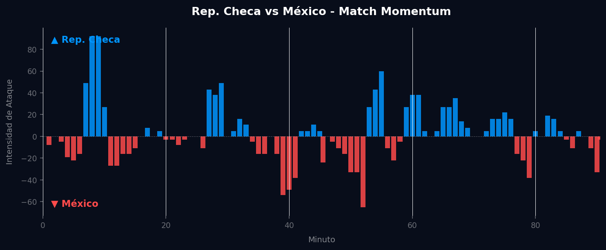
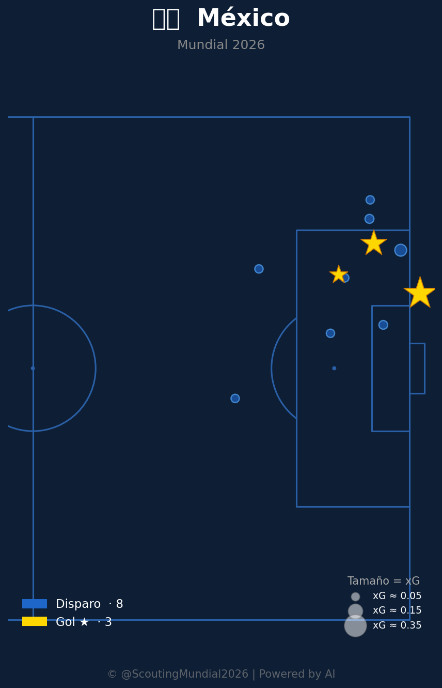

Grupo A
 México
México
Rep. Checa vs México
📅 2026-06-24 · 🕒 20:00 (Local)
Rep. Checa

0 - 3
FINALIZADO
México
📅 2026-06-24 · 🕒 20:00 (Local)
México
El encuentro entre la República Checa y México por el Grupo A del Mundial 2026 fue un claro testimonio de la efectividad y la capacidad de resolución mexicana frente a un rival que mostró arrestos iniciales, pero careció de pegada. México, bajo el liderazgo de su capitán Edson Álvarez, controló el mediocampo y capitalizó sus oportunidades con una frialdad notable. El marcador se abrió en el minuto 23 con un gol de Hirving Lozano, quien aprovechó un desajuste defensivo checo tras una rápida transición. El segundo tanto llegó justo antes del descanso, en el minuto 45+2, obra de Santiago Giménez, quien remató de cabeza un preciso centro desde la banda. La República Checa intentó reaccionar en el segundo tiempo, pero se topó con una defensa sólida y un Guillermo Ochoa seguro. El golpe de gracia lo dio Luis Chávez en el minuto 78 con un potente disparo de media distancia que selló el 0-3 definitivo, asegurando tres puntos cruciales para el Tri y una clara demostración de su potencial ofensivo y equilibrio defensivo.
Los datos del Match Momentum revelan una narrativa interesante que el marcador final enmascara parcialmente. La República Checa experimentó su pico de intensidad ofensiva en el minuto 8', alcanzando un notable 92.00, lo que sugiere una salida en tromba y una búsqueda agresiva del gol en los primeros compases del partido. Sin embargo, este dominio inicial (42.4% del partido) no se tradujo en goles, evidenciando una falta de pegada o la efectividad defensiva mexicana en esos momentos clave. México, en contraste, aunque dominó la intensidad de ataque durante un porcentaje similar (43.5%), logró una eficiencia superior, materializando sus oportunidades. Su pico de intensidad fue menor, 65.00 en el minuto 52', lo que podría indicar un enfoque más conservador o un control del ritmo de juego sin necesidad de ráfagas explosivas constantes. Los goles mexicanos llegaron en fases donde, si bien no tenían su intensidad máxima en ese instante, sí supieron capitalizar momentos de desorganización checa o imponer su superioridad técnica y táctica, convirtiendo su dominio en puntos en el marcador. La caída del ímpetu checo tras su early-peak y su incapacidad para sostener la presión fue un factor determinante.

El planteamiento táctico de la República Checa, probablemente un 4-2-3-1 o 4-3-3, buscaba presionar la salida de México y explotar las bandas, como lo demostró su fuerte inicio con un pico de intensidad en el minuto 8'. Sus aciertos se vieron en la capacidad para generar momentos de asfixia en el mediocampo mexicano durante el primer cuarto de hora, intentando imponer un ritmo alto y directo. Sin embargo, su principal falla fue la ineficacia en los últimos metros; a pesar de dominar la intensidad de ataque en un 42.4% del partido, no lograron concretar ninguna de sus llegadas. La defensa, aunque inicialmente organizada, sufrió ante la velocidad y desequilibrio de los atacantes mexicanos, particularmente en las transiciones rápidas y en jugadas a balón parado o centros laterales, lo que explica los tres goles encajados. La incapacidad para sostener el ritmo y la vulnerabilidad en la fase defensiva tras el primer gol terminaron por minar su confianza y capacidad de respuesta.
México implementó un esquema táctico flexible, posiblemente un 4-3-3 o 4-2-3-1, que priorizó el control del mediocampo y la velocidad en las transiciones. Sus virtudes fueron múltiples: una solidez defensiva que se tradujo en una portería a cero, apoyada por una destacada actuación de Edson Álvarez en la contención y una zaga bien compenetrada que supo neutralizar los intentos checos. El bloque utilizado fue principalmente un medio-bloque, permitiendo a la República Checa tener el balón en zonas no peligrosas para luego presionar intensamente en tres cuartos de cancha y recuperar. La respuesta ante el rival fue ejemplar; absorbieron la intensidad inicial checa con paciencia y disciplina, para luego imponer su propio ritmo a través de la posesión inteligente y ataques verticales. La clínica finalización de Lozano, Giménez y Chávez demostró la eficacia ofensiva del equipo, aprovechando al máximo las oportunidades generadas y gestionando los momentos del partido con una madurez que les permitió capitalizar sus fases de dominio sin necesidad de picos de intensidad extremadamente altos.
El duelo táctico de entrenadores se decantó claramente a favor del estratega mexicano. Mientras la República Checa apostó por una salida potente y una búsqueda incisiva, no logró convertir su ímpetu inicial en ventaja, mostrando una carencia fundamental en la fase de finalización. El técnico checo no encontró la fórmula para ajustar a su equipo ante la persistente amenaza mexicana ni para perforar la defensa rival. Por otro lado, el plan de juego de México fue impecable; supieron capear el temporal inicial, consolidar el mediocampo con la jerarquía de Álvarez y explotar la velocidad y definición de sus atacantes. El veredicto final es que el marcador de 0-3 no solo es justo, sino que refleja con precisión la superioridad táctica y la eficacia de México, que dominó los momentos clave del partido y capitalizó sus oportunidades, dejando a la República Checa con el sabor amargo de un buen inicio que se desvaneció ante la contundencia de su oponente.


